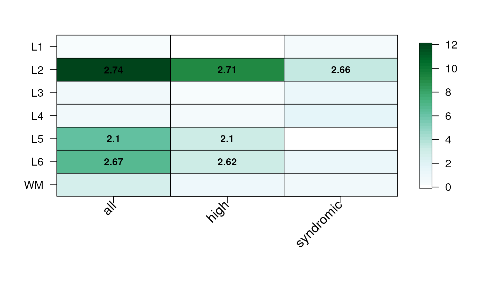

Plot the gene set enrichment results
Source:R/gene_set_enrichment_plot.R
gene_set_enrichment_plot.RdThis function takes the output of gene_set_enrichment() and creates a
heatmap visualization of the results.
gene_set_enrichment_plot(
enrichment,
xlabs = unique(enrichment$ID),
PThresh = 12,
ORcut = 3,
enrichOnly = FALSE,
layerHeights = c(0, seq_len(length(unique(enrichment$test)))) * 15,
mypal = c("white", (grDevices::colorRampPalette(RColorBrewer::brewer.pal(9,
"YlOrRd")))(50)),
cex = 1.2
)Arguments
- enrichment
The output of
gene_set_enrichment().- xlabs
A vector of names in the same order and length as
unique(enrichment$ID). Gets passed tolayer_matrix_plot().- PThresh
A
numeric(1)specifying the P-value threshold for the maximum value in the-log10(p)scale.- ORcut
A
numeric(1)specifying the P-value threshold for the minimum value in the-log10(p)scale for printing the odds ratio values in the cells of the resulting plot.- enrichOnly
A
logical(1)indicating whether to show only odds ratio values greater than 1.- layerHeights
A
numeric()vector of length equal tolength(unique(enrichment$test)) + 1that starts at 0 specifying where to plot the y-axis breaks which can be used for re-creating the length of each brain layer. Gets passed tolayer_matrix_plot().- mypal
A vector with the color palette to use. Gets passed to
layer_matrix_plot().- cex
Passed to
layer_matrix_plot().
Value
A plot visualizing the gene set enrichment odds ratio and p-value results.
Details
Check https://github.com/LieberInstitute/HumanPilot/blob/master/Analysis/Layer_Guesses/check_clinical_gene_sets.R to see a full script from where this family of functions is derived from.
See also
layer_matrix_plot
Other Gene set enrichment functions:
gene_set_enrichment()
Examples
## Read in the SFARI gene sets included in the package
asd_sfari <- utils::read.csv(
system.file(
"extdata",
"SFARI-Gene_genes_01-03-2020release_02-04-2020export.csv",
package = "spatialLIBD"
),
as.is = TRUE
)
## Format them appropriately
asd_sfari_geneList <- list(
Gene_SFARI_all = asd_sfari$ensembl.id,
Gene_SFARI_high = asd_sfari$ensembl.id[asd_sfari$gene.score < 3],
Gene_SFARI_syndromic = asd_sfari$ensembl.id[asd_sfari$syndromic == 1]
)
## Obtain the necessary data
if (!exists("modeling_results")) {
modeling_results <- fetch_data(type = "modeling_results")
}
#> 2024-07-26 23:22:41.360668 loading file /github/home/.cache/R/BiocFileCache/3914827ff0f_Human_DLPFC_Visium_modeling_results.Rdata%3Fdl%3D1
## Compute the gene set enrichment results
asd_sfari_enrichment <- gene_set_enrichment(
gene_list = asd_sfari_geneList,
modeling_results = modeling_results,
model_type = "enrichment"
)
## Visualize the gene set enrichment results
## with a custom color palette
gene_set_enrichment_plot(
asd_sfari_enrichment,
xlabs = gsub(".*_", "", unique(asd_sfari_enrichment$ID)),
mypal = c(
"white",
grDevices::colorRampPalette(
RColorBrewer::brewer.pal(9, "BuGn")
)(50)
)
)

## Specify the layer heights so it resembles more the length of each
## layer in the brain
gene_set_enrichment_plot(
asd_sfari_enrichment,
xlabs = gsub(".*_", "", unique(asd_sfari_enrichment$ID)),
layerHeights = c(0, 40, 55, 75, 85, 110, 120, 135),
)